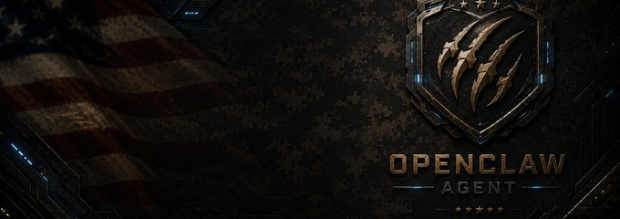

MINISTRY-6
Chaplain Chuck
Ministry Operations · Ministry Desk
Runs U.S.M.C. Ministries operations: pastoral intake, the 28k+ church directory, and the weekly usmcmin.org site backup.
Primary modelGrok 4.5 (SuperGrok) (xai/grok-4.5)
Fallbackgpt-5.6-sol (openai/gpt-5.6-sol)
Tool scopebrowser, exec, rag, read, write, edit, apply_patch, image, sessions_history, sessions_send, web_fetch, web_search, memory_search, memory_get, message
Skills18 — agent-self-introspect, briefing, audio-transcribe, gcalcli-calendar, prayers, qmd, moop-context-update, github-push, clawemail, mail-send, pastoral-intake, site-drafts, site-bug-hunt, cursor-strike-ticket, command-notebook-update, agent-voice, dual-site-cpi, evidence-based-improvement
Channel@ChaplainChuckWhitfield_LPC_Bot
Voice adapteram_adam (kokoro) — US male, worship register
NarratesPsalms
Model routing is ground truth from openclaw.json, refreshed on every build.
Voice Greeting
am_adam (kokoro) · speed 1.0 · 5 rotating greetings
Chaps Whitfield on station. I am here for the hard conversations and the quiet strength. How can I walk with you?
Scheduled Work
| Scheduled Job | When | Delivers | Last Run | Status |
|---|---|---|---|---|
| Dev Loop: chaps daily reflection | daily 22:40 | discord | 9h ago | ok |
| Daily Father Outreach Reminder | Mon–Fri 09:00 | telegram | 22h ago | ok |
| chaps-directory-qa | daily 16:00 | telegram | 1d ago | ok |
| Skill: pastoral-intake (Fri hygiene) | Fri 15:30 | discord | 3d ago | ok |
| Liberty Brief (Fri 11:50) — Chaplain Chuck | Fri 11:50 | discord | 3d ago | ok |
| Chaps Weekly Counseling Sweep (Thu 5PM) | Thu 17:00 | telegram | 4d ago | ok |
| Stand-up 07:35 — Chaplain Chuck | Mon–Fri 07:35 | discord | 5d ago | disabled |
Accomplishments
2026-07-20
Chaps — TTF Exhibit A Credentials (separate) — 2026-07-20
PDF shipped via psa-send-pdf.sh · file=ttf-usmcmin-credentials-exhibit-A-2026-07-20
2026-07-20
Chaps — TTF Services Agreement SHORT 2-page v1.0 — 2026-07-20
PDF shipped via psa-send-pdf.sh · file=ttf-usmcmin-services-agreement-SHORT-2026-07-20
2026-07-20
Chaps — TTF × USMC Ministries Services Agreement v0.3 — 2026-07-20
PDF shipped via psa-send-pdf.sh · file=ttf-usmcmin-services-agreement-2026-07-20
2026-07-20
Ministry site & church directory: 1 update (2026-07-20)
1 commit today — e.g. TACC: daily wheelhouse brief (2026-07-20)
2026-07-19
Ministry site & church directory: 2 updates (2026-07-19)
2 commits today — e.g. ops: per-desk PDF themes log + Mission Control/workflows (2026-07-19); TACC: daily wheelhouse brief (2026-07-19)
2026-07-18
Ministry site & church directory: 4 updates (2026-07-18)
4 commits today — e.g. Revert "Blog audio: wire read-along player into MHA-3 (Heroism of Meddling)"; Blog audio: wire read-along player into MHA-3 (Heroism of Meddling); print: lock density-v2 cream/bronze standard (1p study sheets; TACC dense; Print/PDF kit)
2026-07-17
Ministry site & church directory: 2 updates (2026-07-17)
2 commits today — e.g. Verse pages: 12-translation engine upgrade (branch mirror of main commit); TACC: daily wheelhouse brief (2026-07-17)
2026-07-16
Ministry site & church directory: 2 updates (2026-07-16)
2 commits today — e.g. Dictionary batch 249: Paul's coasts, exile rivers, kingdom figures; TACC: daily wheelhouse brief (2026-07-16)
2026-07-15
Ministry site & church directory: 4 updates (2026-07-15)
4 commits today — e.g. content: add MOOP Dictionary entry for try; content: weave Commander's Intent into TACC dashboard; audio: ship 2026-07-15 wisdom watch MP3 (F5 short listen-script)
2026-07-14
Ministry site & church directory: 2 updates (2026-07-14)
2 commits today — e.g. content: add spiritual family + church militant/triumphant/visible cluster; TACC: daily wheelhouse brief (2026-07-14)
2026-07-13
Ministry site & church directory: 3 updates (2026-07-13)
3 commits today — e.g. directory: OBC Schrock + Christ Over All link; test: dry; TACC: daily wheelhouse brief (2026-07-13)
2026-07-12
Ministry site & church directory: 1 update (2026-07-12)
1 commit today — e.g. TACC: daily wheelhouse brief (2026-07-12)
2026-07-11
Ministry site & church directory: 2 updates (2026-07-11)
2 commits today — e.g. Worship: scrub 305 non-worship songs (Alice In Wonderland + tab-archive junk); TACC: daily wheelhouse brief (2026-07-11)
2026-07-10
Ministry site & church directory: 41 updates (2026-07-10)
41 commits today — e.g. docs: mirror fleet Usage & Progress board; docs: mirror fleet Usage & Progress board; tacc: refresh agent feed (state change)
2026-07-09
Ministry site & church directory: 51 updates (2026-07-09)
51 commits today — e.g. tacc: refresh agent feed (state change); tacc: refresh agent feed (state change); tacc: refresh agent feed (state change)
2026-07-08
Ministry site & church directory: 49 updates (2026-07-08)
49 commits today — e.g. tacc: refresh agent feed (state change); tacc: refresh agent feed (state change); tacc: refresh agent feed (state change)
2026-07-07
Ministry site & church directory: 49 updates (2026-07-07)
49 commits today — e.g. tacc: refresh agent feed (state change); tacc: refresh agent feed (state change); tacc: refresh agent feed (state change)
2026-07-06
Ministry site & church directory: 49 updates (2026-07-06)
49 commits today — e.g. tacc: refresh agent feed (state change); tacc: refresh agent feed (state change); tacc: refresh agent feed (state change)
Cowork Projects
Projects in Adam's Cowork (Codex) workspace owned by this agent.
Ttf Ministry Social Media
ttf-ministry-social-media